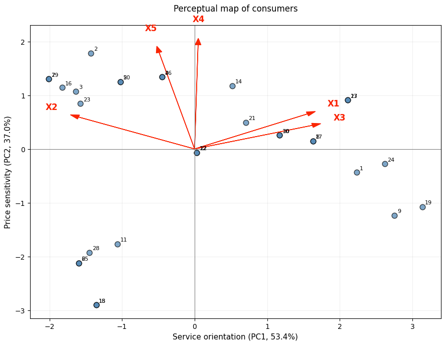
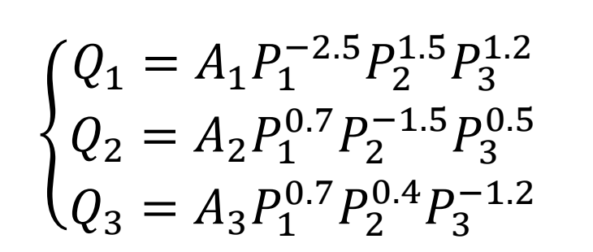
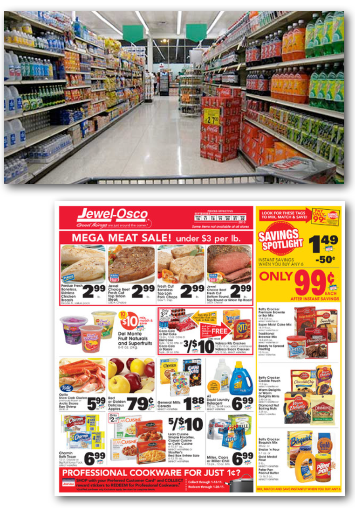
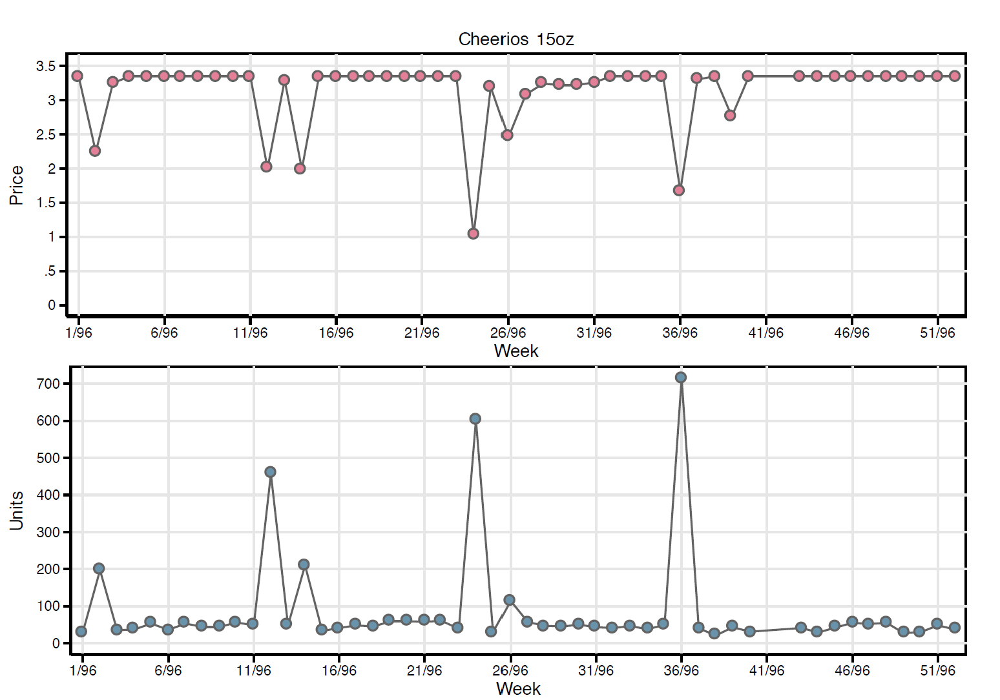
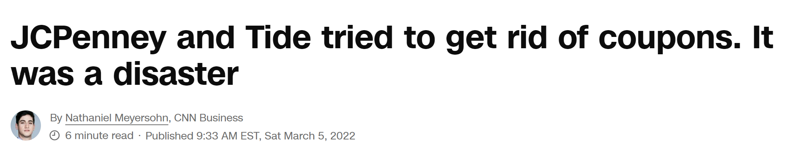

Let me know during the break if you have any questions
Assignment 4 will be posted today
It is a group assignment
Assignments: General feedback
The AI statement is important — you will lose points for not having it
You should state that you have not uploaded class materials to it
Do not over-explain — in the age of AI, conciseness is important
Do not use methods you do not know
What is the Kaiser rule in dimension reduction?
Why is it important not to do that?
Assignment 1: Frequent issues
Q5: Naming of factors
Names are not directional (e.g., “Autonomy” and “Price/Promotion Focus”)
Names are characteristics of the store (e.g., “Quality of service and respect”)
Q7: Number of segments and segmentation
Segmentation using k-means instead of PC1 and PC2
Segments with a single member
Q8: Characteristics of segments
Being in the middle of the map does not mean not caring
Characteristics based on the original variables instead of PC1 and PC2

Assignment 1: Frequent issues (2)
Q9: Profitability
Profitability formula
Hidden assumptions AI makes
Q10: K-means segmentation
You should always find the optimal number of segments
Mostly the same as the map — but it is OK if not exactly the same
Q11: K-means vs. positioning map
K-means: easy, clear, and possible in high-dimensional settings
Positioning map: gives more information and better understanding, but not always possible
We need to ease our quantitative minds!
Assignment 2: Feedback
You mostly did a great job
Which means I need to make the assignment more challenging :D
Q3-b: you should discuss why demand for product 1 has decreased
Q4-b: you should discuss the profit margin in your discussion
What is the difference between product 1 and products 2 and 3?
What does it tell us about the brand or their customer base?
What does the answer to the above tell us about potential price and profitability dynamics?

Review last session
We discussed the following topics in the last session
Regression for demand: estimating multiplicative (log-linear) demand models
Scanner data · time series, cross-section and panel data
Pitfalls of regression
Reverse causality and omitted variable bias
Fixed effects to control for differences across markets
In-class consulting: slot machine pricing for a casino chain
Base pricing analysis
IRI case study: own and cross-price elasticities, cannibalization and competition
Assignment 3: base pricing for the detergent category
Today’s agenda
I · Overview of promotions
Retail and trade promotions · effects on consumer behavior · promotion planning process
II · BDI/CDI analysis
Comparing brand and category strength across markets
III · ROI & lift factors
Return on marketing investment · ROI-based promotions management
IV · Sales prediction
Forecasting sales from log-linear demand models
V · Economics of trade promotions
Forward buying · seasonality · in-class ROI exercise
VI · Assignment 4
Promotion effects for Hellmann’s mayonnaise
Promotion analytics
Part A
Overview of promotions
Retail promotions
TPR’s — temporary price reductions
Display advertising
End-of-aisle display
In-aisle display
On-shelf display
Front-of-the-store display
Feature advertising
Inserts in local newspapers
Circulars distributed around the store
Often, TPR’s are accompanied by display and/or feature advertising.

Are promotions effective?
Cheerios 15 oz prices and sales at the store level

Discuss: do you see a sign of discount effectiveness reduction after a discount?
Sales effect of promotions
Sales spikes at the time of promotional events are common across many brands and categories
Interactions between TPR’s, feature, and display
Example: price effect enhanced by display
Possible sources of the increase in sales volume:
Increase in category consumption
Increase in number of consumers
Increase in household consumption of consumers already purchasing in the category
Brand switching
Stock-piling (purchase acceleration)
For many brands and categories:
Strong brand switching effects
Marketing research during the last decade also points to strong purchase acceleration effects
Purchase acceleration (stock-piling)
What is purchase acceleration?
Buying from deal to deal
A household buys several units or a large pack size when a product (brand) is promoted
The consumer holds inventory of the product at home
Consume off inventory until the next deal
This works for storable products, such as ketchup or frozen meals
Key question: is purchase acceleration a good or a bad thing for the retailer’s bottom line? Pros and cons?
Purchase acceleration: pros
Purchase acceleration may allow firms to price discriminate across households
Example
Two groups of consumers with different willingness to pay (WTP)
Group 1 (price sensitive): WTP = $2.69
Group 2 (insensitive): WTP = $3.99
Cannot price discriminate if the retailer offers only one price
But price discrimination over time (inter-temporal price discrimination) is feasible if:
Group 1 has a low “cost” of holding inventory and monitors price promotions (e.g., looks at feature ads)
Group 2 does not watch out for deals
Group 1 consumers buy at the deal price, and then consume off inventory until the next deal
Group 2 consumers buy mostly at the regular price
Same story with newspaper coupons! Why?
Purchase acceleration: cons
Households may be similar in their willingness to pay and simply shift their purchases from the future to the present when a product is promoted
The sales increase today is borrowed from tomorrow
The volume could have been sold at a higher price
The promotion will be costly to the retailer
Other promotion effects
Do promotions lead to increased consumption of a product in future, i.e., create customer loyalty?
Yes, according to a large body of marketing research
Do promotions become less effective if used more frequently?
Almost certainly yes
But difficult to incorporate into current promotion planning methods
Do promotions degrade the brand image in the long run?
Unresolved
People form expectations about your brand
Do not buy if there is no sale!
A cheap brand is a bad brand

Trade promotions
Trade promotions are incentives given by the manufacturer to the retailer
Incentives to promote products to consumers
Off-invoice allowance
Example: $10.00 off a 12/64 oz case of Tide, May 2 – June 6
Display allowance
Advertising allowance
Scan back
Deal only on cases sold during the promotion period
MDF’s (market development funds)
“Street money” — negotiated between manufacturer and retailer
Slotting allowance
Get (or keep) the product on the shelf
Planning process: Manufacturer
High-level budget allocation
Promotion budget
Consumer promotionsadvertising, coupons
Trade promotions
Choose among a menu of promotions
Summarize the promotion plan in a detailed promotion calendar
Allocation of MDF’s across markets and accounts
Some or all of the promotion calendar can be market-specific
April 11 – May 1
Free-standing insert (FSI) · local TV promotion · $9.50 per 12/16 oz case allowance · $14.00 per 12/32 oz case allowance
May 23 – June 5
$9.50 per 12/16 oz case allowance · $14.00 per 12/32 oz case allowance
Planning process: Retailer
Choice of products or categories to promote
Considerations
Allowances or MDF’s available for a product
Cannibalization of other products in the category
Does the product increase store traffic?
Event planning
Timing of promotions
Choose TPR’s, feature and display support
Loss leaders
Products that increase store traffic if promoted
May increase store profits even if category profits decrease due to the promotion
A classic loss leader: Costco’s $4.99 rotisserie chicken
Promotion analysis
Part B
BDI & CDI
Promotions management: BDI/CDI analysis
Major task facing manufacturers:
Allocate the promotion budget across markets and accounts (retailers)
What metrics are available to guide a brand manager in this task?
BDI and CDI measures have long been used for promotional budget allocation
BDI — brand development index
CDI — category development index
Simple measures to compare the “strength” of a brand or category across markets or accounts
BDI’s and CDI’s can be calculated using scanner data
Definitions
\[ \mathrm{BDI}_m = 100 \cdot \frac{\text{unit sales in market } m \,/\, \text{population in } m}{\text{France unit sales} \,/\, \text{France population}} \]
\[ \phantom{\mathrm{BDI}_m} = 100 \cdot \frac{\%\text{ of product's total France sales in market } m}{\%\text{ of France population in market } m} \]
\[ \mathrm{CDI}_m = 100 \cdot \frac{\%\text{ of category's total France sales in market } m}{\%\text{ of France population in market } m} \]
Notes
Can be applied to accounts instead of markets
Substitute any other country for “France”
BDI calculation: Example
Market
Sales (mil)
Population (mil)
Sales %
Population %
BDI
A
40
40
20
13.3
150
B
10
5
5
1.7
300
C
50
75
25
25
100
D
100
180
50
60
83.3
Total
200
300
100
100
100
Note the difference between the BDI and the share of total sales in each market
What is the intuition behind BDI and CDI?
BDI measures brand “strength” taking market size into account
CDI measures category consumption taking market size into account
BDI/CDI analysis — quadrant analysis
Plot each market by its BDI (horizontal) and CDI (vertical)
High CDI, low BDI: the category sells well but our brand does not
High BDI, low CDI: our brand is strong in a small category
Discuss: how should we change our promotion spending in markets A–D?
HighCDILow
DBCA
LowBDIHigh
BDI/CDI analysis: limitations
Proposal: increase promotion spending in market D to grab a larger share of the category
Is this a sensible proposal?
Consider two scenarios:
Low BDI in market D is a consequence of insufficient trade spending in market D
Our brand doesn’t sell well in market D, and historically trade spending has been less effective than in other markets
An increase in trade spending may make sense in scenario 1, but not in scenario 2
Fundamental problem: BDI and CDI describe the current market situation — they tell us nothing about the profitability consequences, or the return, of increasing or decreasing promotional spending.
Promotion analysis
Part C
ROI measurement
ROI — return on marketing investment
Central concept in data-driven marketing
ROI measures the return from an incremental marketing investment, such as increased trade or consumer promotional spending
Weight \(\theta^{\,i-1}\) is smaller for sales further away from \(t\) (periods from \(t\) on the horizontal axis). The factor \(\frac{1-\theta}{1-\theta^{L}}\) makes the weights add up to 1.
Try it: baseline and lift factors with seasonality
Small \(\theta\): only the nearest weeks count, so the baseline follows the seasonal trend. Large \(\theta\): weeks further away count too.
–True average lift
–Estimated · weighted baseline
–Estimated · simple average
Simulated data: seasonal demand × promotion lift × noise. The weighted baseline uses up to 6 non-promoted weeks on each side of week \(t\). Next: the calculation for the week 24 promotion.
Worked example: baseline sales for one promotion week
The week \(t = 24\) promotion from the previous slide sold \(Q_t =\) . Its nearest non-promoted weeks :
\(i\)
Weeks \(t-i,\ t+i\)
\(Q_{t-i}\)
\(Q_{t+i}\)
\(\frac{Q_{t-i}+Q_{t+i}}{2}\)
Weight \(\theta^{\,i-1}\)
Weight × average
–Baseline sales
–Lift factor = \(Q_t\) / baseline
\(L = 6\) weeks on each side, as in the demo on the previous slide. The factor \(\frac{1-\theta}{1-\theta^{6}}\) equals 1 / (sum of the weights), so the baseline is a weighted average of the six pairs.
Simple approach to predicting lift factors: Pros and cons
Pros
Easy to explain
No complicated statistical analysis required
Cons
Lift factors are difficult to decompose into the components of the promotion:
Percent price reduction
Display coverage across stores or accounts
Feature coverage across accounts
Could look at very specific events (e.g., 15% TPR with 80% display and feature coverage)
But this leaves few observations, so lift factor estimates are not reliable
Predicting lift factors using regression analysis
Use the log-linear (multiplicative) demand model and account for the effect of price and the characteristics of a promotion
After you run a regression in Python, you can obtain the variance of the error term, \(\sigma^2\), as
model = sm.OLS(y, X) # Create the OLS model
results = model.fit() # Fit the model
sigma_squared = results.scale # Variance of the error term
multiplier = np.exp(sigma_squared / 2) # Correction for E(exp(epsilon))
Question: how would we predict expected demand for a new price / promotion from the regression results now?
Promotion analysis
Part E
Principles of the economics of trade promotions
Principles of the economics of trade promotions
Abraham and Lodish (Harvard Business Review, 1990) discuss a particular and highly important cost of trade promotions
An analysis of trade promotions for all brands in 65 different product categories suggests only 16 percent of the promotions are profitable
Why? — Forward buying
Retailers buy extra inventory at lower cost
Lesson: include the foregone contribution from forward buying as an additional event cost in the ROI calculation.
Question: what contracts or incentives can a manufacturer use to prevent forward buying by the retailer?
In-class exercise
Complete the numbers in the promotions-ROI exercise (of a beer company)
What is the ROI of this promotion at a 50% margin?
Cases
Gross dollars
Baseline (sales that would have occurred during the four-week promotion period even without the promotion)
400
$4,000
Incremental sales to consumer
Due to one week of feature
100
$1,000
Due to 50% of stores with three weeks of display and price reduction
250
$2,500
Due to 50% of stores with four weeks of price reduction only
80
$800
Total incremental
430
$4,300
Ten weeks of forward buying by retailers
1,000
$10,000
Total sales during promotion
1,830
$18,300
Cost of promotion ((baseline + forward buying) × 15% discount)
$2,100
Cost of incremental sales (promotion cost ÷ total incremental sales)
$0.49 (= 2,100 / 4,300)
Assumptions
Four-week period
Base sales are 100 cases per week
List price is $10 per case
15% off-invoice offered for four weeks
Calculate ROI if margin is 50%
\[ ROI = \frac{\text{margin} \cdot \text{incr. sales} - \text{cost}}{\text{cost of promotion}} \]